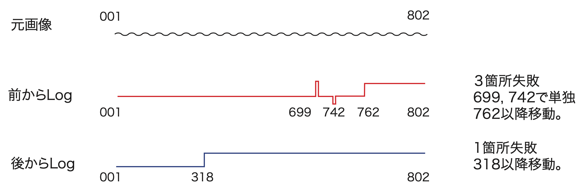
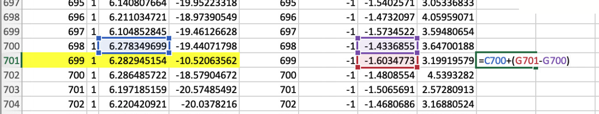
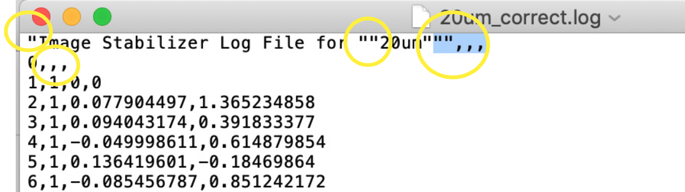

<!doctype html>
<html lang="en" class="no-js">
  <head>
    
      <meta charset="utf-8">
      <meta name="viewport" content="width=device-width,initial-scale=1">
      
        <meta name="description" content="Manual of CoMBI">
      
      
      
        <meta name="author" content="Tajika Y.">
      
      
      <link rel="shortcut icon" href="../../img/favicon.png">
      <meta name="generator" content="mkdocs-1.1.2, mkdocs-material-6.2.4">
    
    
      
        <title>Image Registration/ズレ補正 - Manual of CoMBI</title>
      
    
    
      <link rel="stylesheet" href="../../assets/stylesheets/main.15aa0b43.min.css">
      
        
        <link rel="stylesheet" href="../../assets/stylesheets/palette.75751829.min.css">
        
      
    
    
    
      
        
        <link rel="preconnect" href="https://fonts.gstatic.com" crossorigin>
        <link rel="stylesheet" href="https://fonts.googleapis.com/css?family=Roboto:300,400,400i,700%7C&display=fallback">
        <style>body,input{font-family:"Roboto",-apple-system,BlinkMacSystemFont,Helvetica,Arial,sans-serif}code,kbd,pre{font-family:"",SFMono-Regular,Consolas,Menlo,monospace}</style>
      
    
    
    
    
      
    
    
  </head>
  
  
    
    
    
    
    
    <body dir="ltr" data-md-color-scheme="" data-md-color-primary="none" data-md-color-accent="none">
      
  
    
    <input class="md-toggle" data-md-toggle="drawer" type="checkbox" id="__drawer" autocomplete="off">
    <input class="md-toggle" data-md-toggle="search" type="checkbox" id="__search" autocomplete="off">
    <label class="md-overlay" for="__drawer"></label>
    <div data-md-component="skip">
      
        
        <a href="#image-registration" class="md-skip">
          Skip to content
        </a>
      
    </div>
    <div data-md-component="announce">
      
    </div>
    
      

<header class="md-header" data-md-component="header">
  <nav class="md-header-nav md-grid" aria-label="Header">
    <a href="../.." title="Manual of CoMBI" class="md-header-nav__button md-logo" aria-label="Manual of CoMBI">
      
  

    </a>
    <label class="md-header-nav__button md-icon" for="__drawer">
      <svg xmlns="http://www.w3.org/2000/svg" viewBox="0 0 24 24"><path d="M3 6h18v2H3V6m0 5h18v2H3v-2m0 5h18v2H3v-2z"/></svg>
    </label>
    <div class="md-header-nav__title" data-md-component="header-title">
      <div class="md-header-nav__ellipsis">
        <div class="md-header-nav__topic">
          <span class="md-ellipsis">
            Manual of CoMBI
          </span>
        </div>
        <div class="md-header-nav__topic">
          <span class="md-ellipsis">
            
              Image Registration/ズレ補正
            
          </span>
        </div>
      </div>
    </div>
    
      <label class="md-header-nav__button md-icon" for="__search">
        <svg xmlns="http://www.w3.org/2000/svg" viewBox="0 0 24 24"><path d="M9.5 3A6.5 6.5 0 0116 9.5c0 1.61-.59 3.09-1.56 4.23l.27.27h.79l5 5-1.5 1.5-5-5v-.79l-.27-.27A6.516 6.516 0 019.5 16 6.5 6.5 0 013 9.5 6.5 6.5 0 019.5 3m0 2C7 5 5 7 5 9.5S7 14 9.5 14 14 12 14 9.5 12 5 9.5 5z"/></svg>
      </label>
      
<div class="md-search" data-md-component="search" role="dialog">
  <label class="md-search__overlay" for="__search"></label>
  <div class="md-search__inner" role="search">
    <form class="md-search__form" name="search">
      <input type="text" class="md-search__input" name="query" aria-label="Search" placeholder="Search" autocapitalize="off" autocorrect="off" autocomplete="off" spellcheck="false" data-md-component="search-query" data-md-state="active" required>
      <label class="md-search__icon md-icon" for="__search">
        <svg xmlns="http://www.w3.org/2000/svg" viewBox="0 0 24 24"><path d="M9.5 3A6.5 6.5 0 0116 9.5c0 1.61-.59 3.09-1.56 4.23l.27.27h.79l5 5-1.5 1.5-5-5v-.79l-.27-.27A6.516 6.516 0 019.5 16 6.5 6.5 0 013 9.5 6.5 6.5 0 019.5 3m0 2C7 5 5 7 5 9.5S7 14 9.5 14 14 12 14 9.5 12 5 9.5 5z"/></svg>
        <svg xmlns="http://www.w3.org/2000/svg" viewBox="0 0 24 24"><path d="M20 11v2H8l5.5 5.5-1.42 1.42L4.16 12l7.92-7.92L13.5 5.5 8 11h12z"/></svg>
      </label>
      <button type="reset" class="md-search__icon md-icon" aria-label="Clear" data-md-component="search-reset" tabindex="-1">
        <svg xmlns="http://www.w3.org/2000/svg" viewBox="0 0 24 24"><path d="M19 6.41L17.59 5 12 10.59 6.41 5 5 6.41 10.59 12 5 17.59 6.41 19 12 13.41 17.59 19 19 17.59 13.41 12 19 6.41z"/></svg>
      </button>
    </form>
    <div class="md-search__output">
      <div class="md-search__scrollwrap" data-md-scrollfix>
        <div class="md-search-result" data-md-component="search-result">
          <div class="md-search-result__meta">
            Initializing search
          </div>
          <ol class="md-search-result__list"></ol>
        </div>
      </div>
    </div>
  </div>
</div>
    
    
  </nav>
</header>
    
    <div class="md-container" data-md-component="container">
      
      
        
      
      <main class="md-main" data-md-component="main">
        <div class="md-main__inner md-grid">
          
            
              
              <div class="md-sidebar md-sidebar--primary" data-md-component="navigation" >
                <div class="md-sidebar__scrollwrap">
                  <div class="md-sidebar__inner">
                    


<nav class="md-nav md-nav--primary" aria-label="Navigation" data-md-level="0">
  <label class="md-nav__title" for="__drawer">
    <a href="../.." title="Manual of CoMBI" class="md-nav__button md-logo" aria-label="Manual of CoMBI">
      
  

    </a>
    Manual of CoMBI
  </label>
  
  <ul class="md-nav__list" data-md-scrollfix>
    
      
      
      


  <li class="md-nav__item">
    <a href="../../index.html" class="md-nav__link">
      Top page
    </a>
  </li>

    
      
      
      


  
  <li class="md-nav__item md-nav__item--nested">
    
    
      <input class="md-nav__toggle md-toggle" data-md-toggle="nav-2" data-md-state="indeterminate" type="checkbox" id="nav-2" checked>
    
    <label class="md-nav__link" for="nav-2">
      Installation/導入
      <span class="md-nav__icon md-icon"></span>
    </label>
    <nav class="md-nav" aria-label="Installation/導入" data-md-level="1">
      <label class="md-nav__title" for="nav-2">
        <span class="md-nav__icon md-icon"></span>
        Installation/導入
      </label>
      <ul class="md-nav__list" data-md-scrollfix>
        
        
          
          
          


  <li class="md-nav__item">
    <a href="../../devices/system/index.html" class="md-nav__link">
      System Overview/概要
    </a>
  </li>

        
          
          
          


  <li class="md-nav__item">
    <a href="../../devices/camera/index.html" class="md-nav__link">
      Imaging devices/カメラなど
    </a>
  </li>

        
          
          
          


  <li class="md-nav__item">
    <a href="../../devices/selfmade/index.html" class="md-nav__link">
      Self-made devices/自作装置
    </a>
  </li>

        
          
          
          


  <li class="md-nav__item">
    <a href="../../devices/computer/index.html" class="md-nav__link">
      Computer and storage/コンピュータとストレージ
    </a>
  </li>

        
          
          
          


  <li class="md-nav__item">
    <a href="../../devices/application/index.html" class="md-nav__link">
      Applications/アプリケーション
    </a>
  </li>

        
      </ul>
    </nav>
  </li>

    
      
      
      


  
  <li class="md-nav__item md-nav__item--nested">
    
    
      <input class="md-nav__toggle md-toggle" data-md-toggle="nav-3" data-md-state="indeterminate" type="checkbox" id="nav-3" checked>
    
    <label class="md-nav__link" for="nav-3">
      Instruction/操作
      <span class="md-nav__icon md-icon"></span>
    </label>
    <nav class="md-nav" aria-label="Instruction/操作" data-md-level="1">
      <label class="md-nav__title" for="nav-3">
        <span class="md-nav__icon md-icon"></span>
        Instruction/操作
      </label>
      <ul class="md-nav__list" data-md-scrollfix>
        
        
          
          
          


  <li class="md-nav__item">
    <a href="../../operation/frozenblock/index.html" class="md-nav__link">
      Frozen Block
    </a>
  </li>

        
          
          
          


  <li class="md-nav__item">
    <a href="../../operation/paraffinblock/index.html" class="md-nav__link">
      Paraffin Block
    </a>
  </li>

        
          
          
          


  <li class="md-nav__item">
    <a href="../../operation/camerasettings/index.html" class="md-nav__link">
      Camera Settings
    </a>
  </li>

        
          
          
          


  <li class="md-nav__item">
    <a href="../../operation/tethering/index.html" class="md-nav__link">
      Tethering (optional)
    </a>
  </li>

        
          
          
          


  <li class="md-nav__item">
    <a href="../../operation/combi-u/index.html" class="md-nav__link">
      CoMBI-U (Universal)
    </a>
  </li>

        
          
          
          


  <li class="md-nav__item">
    <a href="../../operation/combi-c/index.html" class="md-nav__link">
      CoMBI-C (Cryostat)
    </a>
  </li>

        
          
          
          


  <li class="md-nav__item">
    <a href="../../operation/combi-s/index.html" class="md-nav__link">
      CoMBI-S (Sliding, motorized)
    </a>
  </li>

        
          
          
          


  <li class="md-nav__item">
    <a href="../../operation/combi-s-m/index.html" class="md-nav__link">
      CoMBI-S (Sliding, manual)
    </a>
  </li>

        
          
          
          


  <li class="md-nav__item">
    <a href="../../operation/combi-r/index.html" class="md-nav__link">
      CoMBI-R (Rotary, manual)
    </a>
  </li>

        
      </ul>
    </nav>
  </li>

    
      
      
      


  
  <li class="md-nav__item md-nav__item--nested">
    
    
      <input class="md-nav__toggle md-toggle" data-md-toggle="nav-4" data-md-state="indeterminate" type="checkbox" id="nav-4" checked>
    
    <label class="md-nav__link" for="nav-4">
      Image Processing
      <span class="md-nav__icon md-icon"></span>
    </label>
    <nav class="md-nav" aria-label="Image Processing" data-md-level="1">
      <label class="md-nav__title" for="nav-4">
        <span class="md-nav__icon md-icon"></span>
        Image Processing
      </label>
      <ul class="md-nav__list" data-md-scrollfix>
        
        
          
          
          


  <li class="md-nav__item">
    <a href="../introduction/index.html" class="md-nav__link">
      Overview/画像処理の概要
    </a>
  </li>

        
          
          
          


  <li class="md-nav__item">
    <a href="../rawjpeg/index.html" class="md-nav__link">
      RAW to JPEG conversion/RAW現像
    </a>
  </li>

        
          
          
          


  <li class="md-nav__item">
    <a href="../scale/index.html" class="md-nav__link">
      Resize/画像の縮小
    </a>
  </li>

        
          
          
          


  <li class="md-nav__item">
    <a href="index.html" class="md-nav__link">
      Image Registration/ズレ補正
    </a>
  </li>

        
          
          
          


  <li class="md-nav__item">
    <a href="../3dslicer/index.html" class="md-nav__link">
      3D Reconstruction, 3D slicer
    </a>
  </li>

        
          
          
          


  <li class="md-nav__item">
    <a href="../icy/index.html" class="md-nav__link">
      3D Reconstruction, Icy
    </a>
  </li>

        
          
          
          


  <li class="md-nav__item">
    <a href="../horos/index.html" class="md-nav__link">
      3D Reconstruction, Horos/OsiriX
    </a>
  </li>

        
          
          
          


  <li class="md-nav__item">
    <a href="../correlation/index.html" class="md-nav__link">
      Correlation of 2D and 3D images/3D像に切片位置を示す
    </a>
  </li>

        
          
          
          


  <li class="md-nav__item">
    <a href="../EDF/index.html" class="md-nav__link">
      Extended Depth of Field/深度合成
    </a>
  </li>

        
          
          
          


  <li class="md-nav__item">
    <a href="../ilastik/index.html" class="md-nav__link">
      Segmentation by ilastik/セグメンテーション
    </a>
  </li>

        
      </ul>
    </nav>
  </li>

    
      
      
      


  <li class="md-nav__item">
    <a href="../../gallery/gallery/index.html" class="md-nav__link">
      Gallery/作品集
    </a>
  </li>

    
      
      
      


  <li class="md-nav__item">
    <a href="../../publication/publication/index.html" class="md-nav__link">
      Publications/論文
    </a>
  </li>

    
      
      
      


  
  <li class="md-nav__item md-nav__item--nested">
    
    
      <input class="md-nav__toggle md-toggle" data-md-toggle="nav-7" data-md-state="indeterminate" type="checkbox" id="nav-7" checked>
    
    <label class="md-nav__link" for="nav-7">
      Electronics
      <span class="md-nav__icon md-icon"></span>
    </label>
    <nav class="md-nav" aria-label="Electronics" data-md-level="1">
      <label class="md-nav__title" for="nav-7">
        <span class="md-nav__icon md-icon"></span>
        Electronics
      </label>
      <ul class="md-nav__list" data-md-scrollfix>
        
        
          
          
          


  <li class="md-nav__item">
    <a href="../../electronics/ATmega328P/index.html" class="md-nav__link">
      ATmega328P standalone/単体利用
    </a>
  </li>

        
          
          
          


  <li class="md-nav__item">
    <a href="../../electronics/terminal/index.html" class="md-nav__link">
      Crimped terminal/圧着端子
    </a>
  </li>

        
          
          
          


  <li class="md-nav__item">
    <a href="../../electronics/vender/index.html" class="md-nav__link">
      Venders/パーツの入手先
    </a>
  </li>

        
      </ul>
    </nav>
  </li>

    
  </ul>
</nav>
                  </div>
                </div>
              </div>
            
            
              
              <div class="md-sidebar md-sidebar--secondary" data-md-component="toc" >
                <div class="md-sidebar__scrollwrap">
                  <div class="md-sidebar__inner">
                    
<nav class="md-nav md-nav--secondary" aria-label="Table of contents">
  
  
    
  
  
    <label class="md-nav__title" for="__toc">
      <span class="md-nav__icon md-icon"></span>
      Table of contents
    </label>
    <ul class="md-nav__list" data-md-scrollfix>
      
        <li class="md-nav__item">
  <a href="#applications" class="md-nav__link">
    Applications/アプリケーション
  </a>
  
</li>
      
        <li class="md-nav__item">
  <a href="#_1" class="md-nav__link">
    手順
  </a>
  
</li>
      
        <li class="md-nav__item">
  <a href="#log" class="md-nav__link">
    Logファイルを修正する
  </a>
  
</li>
      
        <li class="md-nav__item">
  <a href="#log_1" class="md-nav__link">
    Logファイルを倍加する
  </a>
  
</li>
      
        <li class="md-nav__item">
  <a href="#tips" class="md-nav__link">
    Tips
  </a>
  
    <nav class="md-nav" aria-label="Tips">
      <ul class="md-nav__list">
        
          <li class="md-nav__item">
  <a href="#_2" class="md-nav__link">
    おそい
  </a>
  
</li>
        
          <li class="md-nav__item">
  <a href="#_3" class="md-nav__link">
    うまくいかない
  </a>
  
</li>
        
          <li class="md-nav__item">
  <a href="#_4" class="md-nav__link">
    どうしてもだめ
  </a>
  
</li>
        
          <li class="md-nav__item">
  <a href="#imagejfijiimage-stabilizer-log-applier" class="md-nav__link">
    新版ImageJ/FIJIのバグ、Image Stabilizer Log Applierができない？
  </a>
  
    <nav class="md-nav" aria-label="新版ImageJ/FIJIのバグ、Image Stabilizer Log Applierができない？">
      <ul class="md-nav__list">
        
          <li class="md-nav__item">
  <a href="#1" class="md-nav__link">
    対策1、テキストとしてコピペ
  </a>
  
</li>
        
          <li class="md-nav__item">
  <a href="#2imagejfiji" class="md-nav__link">
    対策2、旧版のImageJ/FIJIを使う
  </a>
  
</li>
        
      </ul>
    </nav>
  
</li>
        
      </ul>
    </nav>
  
</li>
      
    </ul>
  
</nav>
                  </div>
                </div>
              </div>
            
          
          <div class="md-content">
            <article class="md-content__inner md-typeset">
              
                
                
                <h1 id="image-registration">Image Registration/ズレ補正</h1>
<p>(This page is still in Japanease only.)</p>
<h2 id="applications">Applications/アプリケーション</h2>
<ul>
<li>
<p>ImageJ/FIJI, plug-ins "Image Stabilizer" and "Image Stabilizer Log Applier"</p>
<p><a href="https://imagej.net/plugins/image-stabilizer">https://imagej.net/plugins/image-stabilizer</a></p>
</li>
<li>
<p>MS Excel, or Apple Numbers</p>
</li>
</ul>
<p>ImageJ/FIJIに上記リンクを参考に、プラグインをインストールします。Macの場合、Finderで操作します。<code>/Application/Fiji.app</code>の上で、<code>右クリック</code>、<code>Show packege contents</code>。<code>/plugins</code>のなかにダウンロードしたファイルをドラッグ・アンド・ドロップし、ImageJ/FIJIを再起動、です。<br>
数あるRegistrationツールの中から、Image Stabilizerをえらびました。移動させた距離（ピクセル）をLogファイルとして記録シてくれるのがポイントです。万が一、ズレ補正に失敗する箇所があっても、Logファイルの数値を修正することで、ズレ補正を成功に導けます。さらに、Logファイルの数値を倍加することで、大きな画像にもズレ補正をかけられます。</p>
<h2 id="_1">手順</h2>
<ol>
<li>（準備、済んでいれば改めては不要です）ImageJ/FIJIが利用するメモリ量を決める。搭載メモリの75%が推奨最大値。<code>Edit</code>&gt; <code>Options</code>&gt; <code>Memory &amp; Threads...</code>&gt; <code>Maximum Memory</code>。MBで入力、余裕を持って75%より少なめで使っている。64GBなら42GB（42000 MB）など。ImageJ/FIJIを再起動する。</li>
<li>（準備、済んでいれば改めては不要です）JPEGの圧縮率を決めておく。<code>Edit</code>&gt; <code>Options</code>&gt; <code>Input/Output...</code>&gt; <code>JPEG quality (0-100)</code>。<code>100</code>をおすすめします。CoMBIの連続画像の場合、データ量はTIFF比較（フォルダの容量）で95で6%へ、100で12%へと減少し、画質は遜色ないかなといった程度です。デフォルトの<code>85</code>では、データ量が2.5%へとかなり減少しますが、画質はかなり低下します</li>
<li>連続画像をひらく　フォルダごとImageJのバーにドラッグアンドドロップ。搭載メモリと相談ですが、おおかた1000x1000x10000枚の画像が限度です。メモリに展開してください。かつてはVirtual Stackでもできましたが、ImageJのバージョンアップ後、逐次保存ができなくなりました。</li>
<li><code>Plug-ins</code>, <code>Image Stabilizer</code>　このとき一番前の画像を開いておけば、前から順にに補正をかけます。一番後ろの画像を開いておけば、後ろから補正します。Logファイルを生成するに必ずチェックをいれます。もし、メモリが潤沢なら、結果を別ファイルで表示するにチェックしたほうがよく、補正の成否確認に便利です。</li>
<li>パラパラとめくってみて、成功していれば、ラッキー。完了です。（ちょっと便利：<code>Analyze</code>&gt;<code>Tools</code>&gt;<code>Synchronize Windows</code>で、補正前後の連続画像を同期してめくれます）</li>
<li>補正に成功した連続画像を保存するには、<code>Save as</code>, <code>Image Sequense...</code> 元のファイル名を使うに、チェック。</li>
<li>ログファイルも保存します。拡張子は、.logで、テキストファイルです。<ul>
<li>前から補正したlogファイルと、後ろから補正したlogファイルがあれば、区別できるようにファイル名をつけて保存します。例、<strong>前から.log、後から.logとか</strong>（以降の説明ではこの名称を使います）、forward.log、backward.logとか。</li>
</ul>
</li>
<li>補正に失敗した場合、失敗箇所（前から何枚目か）のメモをとります。このメモと、logファイルさえ保存しておけば、失敗連続画像を保存する必要はありません。</li>
</ol>
<h2 id="log">Logファイルを修正する</h2>
<p>Logファイルには、4列の数値があって、</p>
<ol>
<li>画像の順番、</li>
<li>前に進んだか後に進んだか（1、-1）、</li>
<li>ヨコの補正距離、</li>
<li>タテの補正距離</li>
</ol>
<p>これらが収録されています。ズレ補正に失敗があっても、あきらめません。Logファイルをエクセルなどで修正します。補正失敗には2通りあり、失敗箇所のメモでは区別して記載します。</p>
<ol>
<li>一枚だけが飛び出ている</li>
<li>1箇所ずれるとそれ以降がごっそり移動しっぱなし</li>
</ol>
<p>という2種類です。下の例では、前から補正の699、742枚目で一枚だけ飛び出ています。また、前から補正の762、後ろから補正の318で、移動が起こっています。</p>
<p></p>
<p><em>例、前から補正と後ろから補正の結果</em>
<br><br>
Logファイルを修正する戦略は、「前から.logの正しいところと、後ろから.logの正しいところを合体させて、全体が正しいlogファイルを新しく作る」というものです。</p>
<ol>
<li>用意するものは、前から.log、後から.log、失敗箇所のメモ</li>
<li>Excelで、Sheet1に前から.logをインポートします。<code>File</code>&gt; <code>Import</code>、<code>Text file</code>、<code>Importボタン</code>ファイルをえらんで<code>Get Data</code></li>
<li>Text import wizard<ol>
<li><code>Delimited</code>にチェック、</li>
<li>File originは、Macなら<code>Macintosh</code>　</li>
<li>ボタン<code>Next</code></li>
<li><code>Commma</code>にチェック、</li>
<li>ボタン<code>Finish</code></li>
<li>Existing sheet, sheet1, </li>
<li>ボタン<code>OK</code></li>
</ol>
</li>
<li>Excelで、Sheet2を用意し、上記と同様に、後から.logをsheet2にインポートします。</li>
<li>後から.logは降順になっているので、昇順になおします。<ol>
<li>4列とも、選択する。</li>
<li>タブ<code>Data</code></li>
<li><code>Sort</code>, Sort by <code>Column A</code>, Order <code>A-Z</code>, </li>
<li>ボタン<code>OK</code></li>
</ol>
</li>
<li>前から.log（Sheet1）のすぐ隣に、後から.log（Sheet2）をコピペする</li>
<li>
<p>失敗位置を修正する</p>
<ol>
<li>失敗箇所を、色を違えるなどして、マークする。</li>
<li>
<p>「一枚だけ飛び出ている」場合</p>
<ul>
<li>失敗場所だけ、<strong>差分</strong>を加算する。下の式。</li>
<li>（失敗場所の本来の移動距離）=(失敗場所のひとつ前）+（正しいlogの同じ場所 - 正しいlogのひとつ前）</li>
<li>ヨコの補正距離、タテの補正距離、の両方に施すこと。</li>
</ul>
</li>
<li>
<p>「1箇所以降ごっそり移動」の場合</p>
<ol>
<li>新しい列で作業します。</li>
<li>まず、ズレはじめの場所で、差分を加算して修正し（上記の式）、正しい移動距離を新しい列に記載します。</li>
<li>つぎに、正しい移動距離数値より以降のセルに、正しい移動距離をつくります。<ul>
<li>（以降の正しい移動距離）=(前項でつくった正しい移動距離）+（正しいlogの同じ場所 - 正しいlogのひとつ前）</li>
</ul>
</li>
<li>以降セルすべてに適用します。Auto Fillという機能で、選択したセルの四角いマークを下へ伸ばします。
<br>

<em>699以降で移動している例（上の図とは異なります）　まず、新しい列で、699の正しいヨコ補正距離を計算している（緑枠）</em>
<br>

<em>（タテ補正距離も計算したあと）、つぎに、正しい移動距離数値より以降のセルに、正しい移動距離をつくる</em>
<br></li>
</ol>
</li>
</ol>
</li>
<li>
<p>修正がすんだら、元のLogファイルと同じデザインにします。「1行目はタイトル行、その下に枚数分の行数があって、各4桁」にします。</p>
<ol>
<li>新しいシートをつくる</li>
<li>そこに、計算結果の数値をコピペする。Excelなら、<code>Edit</code>, <code>Paste Special...</code>, <code>Valuesチェック</code>, <code>OKボタン</code>を使います。</li>
</ol>
</li>
<li>ここで、いったん、xlsx形式で保存しておきます。</li>
<li>次に、別名保存で、csv形式で保存します。<code>File</code>&gt; <code>Save as</code>, File Format:<code>csv</code>　CSVファイルは、Sheetごとにしか保存できません。</li>
<li>Finderで、保存したcsvファイル名の拡張子を書き換えます。<code>.csv</code>から<code>.log</code>へ。メッセージがでて、ボタン<code>use log</code>をクリック。</li>
<li>Finderで、そのファイルをテキストエディタで開く。<code>右クリック</code>, <code>Open with</code>, <code>TextEdit.app</code></li>
<li>
<p>余計な文字を削除する。1行目の「"」6個、「,」3個、2行目の「,」3個を削除。（この作業を忘れると、のちのLog Applierで認識してくれません。もとのLogファイルとそっくりにします。特に１行目、２行目、最終行を確認。余計なスペースがあったら削除。）
    
    <em>余計な文字を削除</em></p>
</li>
<li>
<p>保存、<code>File</code>&gt; <code>Save</code>。これで修正Logファイルの完成です。</p>
</li>
<li>ImageJ/FIJI, <code>Plug-ins</code>, <code>Image Stabilizer Log Applier</code>にかけます。連続画像と、修正したlogファイルを開いておいてから、Applierを実行します。（注、最新のImageJ/FIJIには、logファイルを開くときにバグがあります。対策は下記）</li>
</ol>
<h2 id="log_1">Logファイルを倍加する</h2>
<p>例えば、「500x500 pixels, 40 µm/pixel」の連続画像で、Image Stabilizer（ズレ補正）に成功すれば、Logファイルの数値ぜんぶを2倍にして、「1000x1000 pixels, 20 µm/pixel」の連続画像に、Image Stabilizer Log Applierをかけることができます。Log Applierはパソコンへの負荷が低いので、重い連続画像でズレ補正する際に、重宝しています。</p>
<p>では、4倍にして、「2000x2000 pixels, 10µm/pixel」の連続画像にかける？これは、データ量が多くなるので、ちょっと工夫が必要になるかもしれません。<strong>高精細さはそのままに、観たいところだけクロップ</strong>した連続画像「例、1000x1000, 10µm/pixel」を用意すれば、Applierにかけられ、高精細観察ができます。</p>
<p>最初に行う、Image Stabilizerは、ブロック周囲形状をズレ補正の基準にしているので、ズレ補正は、広く写った画像にしか適用できません。一方、Image Stabilizer Log Applierでは、ブロック周囲形状は、もはや必要ありません。「試料全体で低倍率の3D観察」と「観たいところだけで高精細の3D観察」を分けて行っています。倍加logファイルがそういう観察を可能にしてくれています。</p>
<p>倍加logでは、2倍、4倍までなら、余裕でキレイに補正してくれます。8倍、10倍は？ズレ補正が甘い場合があります、うまくいくときはうまくいきます。10倍以上の倍加は？通常そんなに倍加することはありません。オリジナル画像は最大約8000x6000 pixelsで、10分の1だと800x600 pixels。余裕でズレ補正できる軽さになるからです。</p>
<h2 id="tips">Tips</h2>
<h3 id="_2">おそい</h3>
<ul>
<li>画像が大きすぎませんか。はじめは小さく縮小した連続画像からやってみて、Logファイルをゲットします。具体的には、はじめは500x500程度で、成功率は高いです。つぎに750x750程度、さらに1000x1000程度で成功すればラッキーです。Logファイルさえ入手できれば、そのまま使うもよし、数値を倍加するなどして、大きなままの連続画像に対してLog Applierするもよし。</li>
<li>画像のデータ量を少なくする、基本の技1。縮小やクロップで少なくしています。クロップは、RAW−JPEG変換時またはPhotoshop, ImageJで縮小するときにやっていて、ブロック面と周辺少しが残る程度にしています。</li>
<li>画像のデータ量を少なくする、基本の技2。カラー画像よりも、グレースケール画像のほうが軽いです。3分の1。</li>
<li>画像データ量を少なくする、別の技。奇数番号だけ、偶数番号だけにしたこともあります。これは、切削を薄くしすぎた、過剰だったときに行ないます。Macの場合、まず、Finderを縦に細長く表示させ、アイコン表示にします。2列に表示されれば、マウスで片方の列だけ選択して、新しいフォルダにまとめます。</li>
</ul>
<h3 id="_3">うまくいかない</h3>
<p>一発でうまくいくときから、まれに2日間ほど悩むときもあります。しかし、これまで200サンプル以上のCoMBI撮影を経験し、ズレ補正に失敗したことはありません。きっとどうにかできるはずです。うまくいったときの最速記録は、8サンプルのCoMBI撮影からズレ補正までを丸2日間で成功させたというものです。</p>
<ul>
<li>Image Stabilizerを最初の画像からやってみてだめなら、後ろからやってみる。</li>
<li>Image StabilizerのLog（前からLogと後ろからLog）を修正する。</li>
<li>前から後から、何度でもやってみる。あとでLogを足し合わせ、Applier。毎度修正連続画像を保存していると画質が低下するので、Logは複数回分、Applierで一回にする。</li>
</ul>
<p>これらでできない場合は：</p>
<ul>
<li>ブロックの外周で補正がかかります。画像にブロック外周が含まれていますか？クロップしすぎていませんか。</li>
<li>ゴミがかかっている画像で、ズレ補正が失敗することがあります。ゴミをかぶった画像はすてて、隣の画像で補完してください。隣を複製し、ファイル名をかえます。実験ノートに記録をのこします。</li>
<li>撮影に失敗した箇所で、ズレ補正が失敗することがあります。たとえば撮影ポイントを通り過ぎてしまった一コマなど。手動クリオスタットの場合にときどきあります。ひどい場合は、捨てて隣で補完します。惜しいときは、クロップ（RAW-JPEG変換時か、PhotoshopやImageJでやったか）するときに、手動でクロップ位置を修正します。</li>
<li>コントラストが低すぎると、うまくいかないかもしれません。コントラストをどぎつくしたバーションもつくってみて、Image Stabilizerをやってみます。Logファイルさえ手に入れば、好みのコントラストシリーズにもLog Applierをかけられます。</li>
</ul>
<h3 id="_4">どうしてもだめ</h3>
<ul>
<li>どうしてもダメなら、ご連絡ください。無敗ですので。</li>
</ul>
<h3 id="imagejfijiimage-stabilizer-log-applier">新版ImageJ/FIJIのバグ、Image Stabilizer Log Applierができない？</h3>
<p>ImageJ/FIJIを最新にアップデートしたら、Image Stabilizer Log ApplierでLogファイルをひらくと、改行がなくなってしまい、使えなくなります。いつもどおり、Image Stabilizerはできるし、Logファイルも正しく生成はされます。一旦保存したLogファイルを再び開くときだけのバグです。改行コードの扱いに関するようにもみえるし、FIJIがテキストファイルを認識するとき、利用するウィンドウ種の選択がおかしくなったようにもみえます。FIJIのサイトによると、2020年8月に大型アップデートを施したそうです。2020年8月Mac OS 10.15.6、および2020年10月Windows10、2021年4月Linux/Ubuntu20.04でも同様の症状がでます（Thank you! T)。いまのところ、以下の対策<strong>いずれか</strong>で使えるようになります。</p>
<h4 id="1">対策1、テキストとしてコピペ</h4>
<ol>
<li>Logファイルをテキストとして開く。Macの場合、Finderで保存したLogファイル上で右クリック、アプリ指定で開く Open with... TextEdit.app。Windowsの場合、メモ帳で開く。すべて選択してコピー。</li>
<li>ImageJ/FIJIで、新規のテキストウィンドウを作る。Linux, Win, Macの場合、<code>File</code>&gt; <code>New</code>&gt; <code>System clipboard</code>　上記でコピーしておいたデータがすでにペーストされています。Macの場合、<code>Plug-ins</code>&gt;<code>New</code>&gt;<code>Text Window...</code> (width, heightはなんでもよい) でもできます、手動でペーストします。（以前、Plug-ins由来のこの方法は、Mac, Winでできると記していましたが、Macだけの対応でした。すみません訂正します。2021.4）</li>
<li>これでLogファイルが正常に開いた状態になります。以降は通常のImage Stabilizer Log Applierの手順です。</li>
<li>ImageJ/FIJIで、連続画像を開く</li>
<li>ImageJ/FIJI　Plug-ins &gt; Image Stabilizer Log Applier
    エラー 「Invarid log: For input string: "0 "」が出る場合、2行目の「0」のとなりにスペースが入ってしまっているかも知れません。2行目のスペースを削除してください。なお、1行目および3行目以降にも、末尾スペースがありますが、削除する必要はありません。</li>
</ol>
<h4 id="2imagejfiji">対策2、旧版のImageJ/FIJIを使う</h4>
<p>下記リンク、過去のバージョンリスト(2019.10.27-2020.8.10)には20種のバージョンがあます。
<a href="https://downloads.imagej.net/fiji/archive/">https://downloads.imagej.net/fiji/archive/</a></p>
<ul>
<li>FIJI 20200721-1931 Logファイルは正常に開く。これより前の古いバージョンを使ってください。</li>
<li>FIJI 20200802-0255 Logファイルは直接使えない。もし、これより新しいバージョンを使わなければ行けない場合は、上記の対策1を行ってください。</li>
</ul>
<hr />
                
              
              
                


              
            </article>
          </div>
        </div>
      </main>
      
        
<footer class="md-footer">
  
  <div class="md-footer-meta md-typeset">
    <div class="md-footer-meta__inner md-grid">
      <div class="md-footer-copyright">
        
          <div class="md-footer-copyright__highlight">
            © 2021 Tajika Y, CC BY-NC
          </div>
        
        Made with
        <a href="https://squidfunk.github.io/mkdocs-material/" target="_blank" rel="noopener">
          Material for MkDocs
        </a>
      </div>
      
    </div>
  </div>
</footer>
      
    </div>
    
      <script src="../../assets/javascripts/vendor.93c04032.min.js"></script>
      <script src="../../assets/javascripts/bundle.83e5331e.min.js"></script><script id="__lang" type="application/json">{"clipboard.copy": "Copy to clipboard", "clipboard.copied": "Copied to clipboard", "search.config.lang": "en", "search.config.pipeline": "trimmer, stopWordFilter", "search.config.separator": "[\\s\\-]+", "search.placeholder": "Search", "search.result.placeholder": "Type to start searching", "search.result.none": "No matching documents", "search.result.one": "1 matching document", "search.result.other": "# matching documents", "search.result.more.one": "1 more on this page", "search.result.more.other": "# more on this page", "search.result.term.missing": "Missing"}</script>
      
      <script>
        app = initialize({
          base: "../..",
          features: ['navigation.expand'],
          search: Object.assign({
            worker: "../../assets/javascripts/worker/search.8c7e0a7e.min.js"
          }, typeof search !== "undefined" && search)
        })
      </script>
      
    
  </body>
</html>